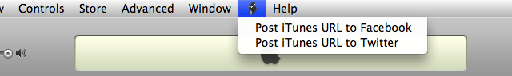
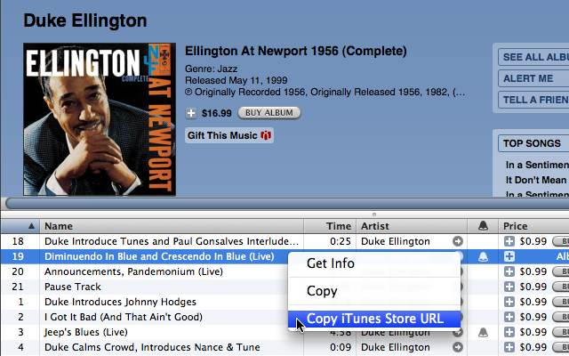
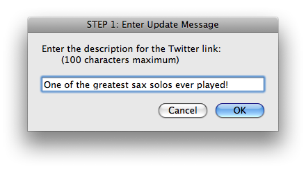
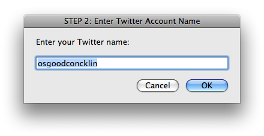
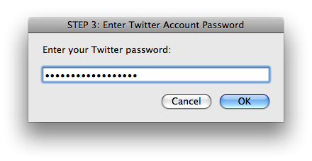
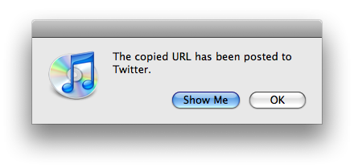
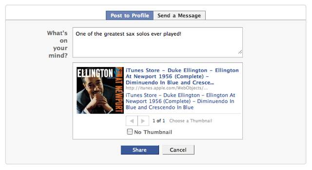
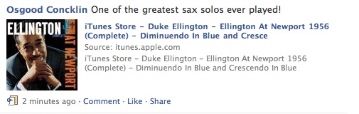

Post iTunes URL to Social Networks
Have you ever found a track, artist, or podcast on the iTunes Store you wanted to share with your friends on Twitter and Facebook? Now it's so easy! The Post iTunes URL to Social Networks scripts make it simple.
Use of the following scripts require valid accounts on Twitter and/or Facebook.
STEP 1: Install the Scripts
Download and run the installer. Two AppleScript scripts will be placed into a special folder used by iTunes, which will automatically display them in its Script Menu.

STEP 2: Copy an iTunes Store URL
Once the AppleScript scripts are installed, you begin the process of sharing an interesting iTunes item by clicking on it with the Control key down to summon the iTunes contextual menu, and then choosing Copy iTunes Store URL from the popup menu. Doing so will place the iTunes URL on the clipboard.

STEP 3: Posting the URL to Twitter
Once the URL is on the clipboard, you're ready to share your favorite link with your friends on Twitter. Simply select Post iTunes Store URL to Twitter from the iTunes Script Menu.
In the forthcoming dialog, enter the text (100 characters or less) of the description to accompany the iTunes Store link:

In the next dialog, enter your Twitter account name:

And then, enter your Twitter password:

A dialog will confirm the posting. Click the Show Me button to view the Tweet:

STEP 3: Posting the URL to Facebook
Once the URL is on the clipboard, you're ready to share your favorite link with your friends on Facebook. Simply select Post iTunes Store URL to Facebook from the iTunes Script Menu.
Your browser will display the Facebook input screen. Enter your description and click the Share button:

Your Facebook page will be updated with the information:
